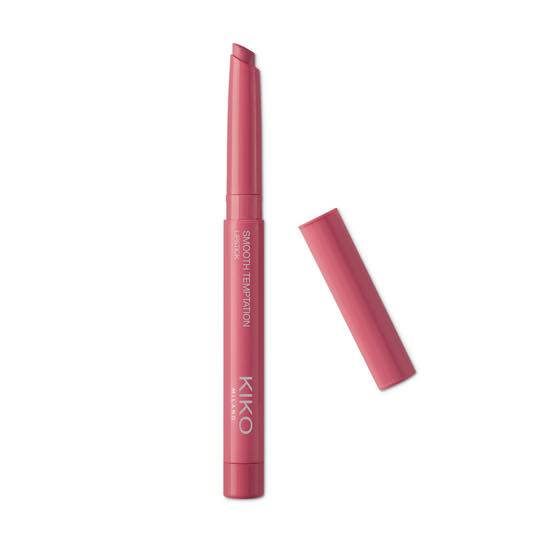
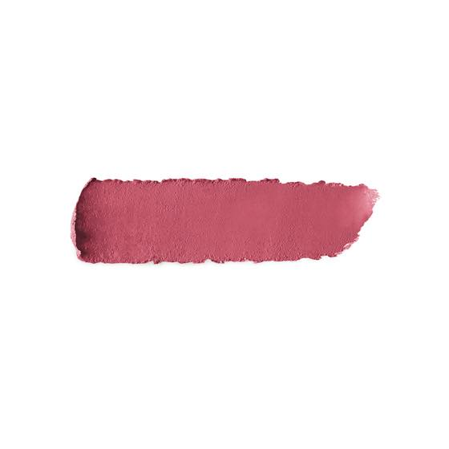
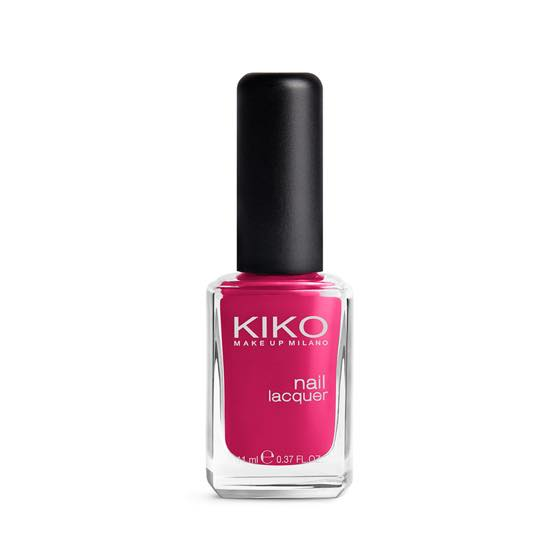
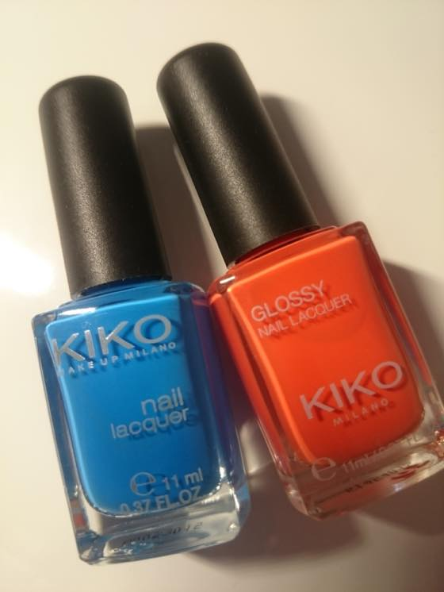

안녕하세요 세일의 노예 0호 입니다 -_-;;
리젠트스트릿에 생긴이후 여기저기 슬금슬금 매장이 늘어가는
이탈리아 브랜드인데요 세일가격이 늠싸길래 오며가며 집어온게 꽤 됩니다 ^^;;
역시 화장품 사는이유 = 세일해서.......OTL
Smooth Temptation Lipstick 01 / 02 번 두개 구매해봤습니다. 가격은 £7.90 에서 £2.30
정석 레드 & 핑크 인데용
인터넷 검색해보면 키코립스틱 좋다는 사람 많이보이는데
제취향은 아니네욤;;; 발색은 잘되지만 색이 탁합니다 :p


요 06번 로즈우드 였나 그런 이름이었는데 ^^;; 젤 맘에들었지만 이건 매장에서 찾아볼수가 없더라구용.

검색해보면 립제품이 많이보이는데 제가 정작 맘에든건 네일이에용 :D
1파운드 하길래 첨에 336 Electric Blue / 283 Dark Coral Pink
일케 두개 집어왔는데. 잘발리고 색도 본통에서 보는거랑 똑같이 발색되고 해서
2-3일 뒤에 생각나서 또 매장들렀더니 그새 세일 종료 + 가격이 2.50파운드 으로 바뀌어있.....OTL
인생은 역시 타이밍 ㅋㅋㅋㅋㅋㅋ 그래도 아수버서
295 Cerulean Blue / 670 Orange 두개 더 집어왔습니다 :3

한동안 깜장 & 톤다운된 색 네일을 많이 발랐는데
쨍하고 밝은색을 바르니 기분이 좋네용. 네일바른거 쳐다보면서 헤헤거리고 있습니다 ^^;;
저는 낼 Somerset house에서 하는 스탠리 큐브릭 전시 보러 갑니다.
원래 오늘 댕겨올려했는데. 아침에 일어나서 웹사이트 확인했더니 올 솔드아웃......OTL
수요일날 전시 종료인데// 연장전시는 밤 9시까지 한다고 해서 글엄 차라리 월욜날 갈까 싶었지만
월화수 오후6시이후 는 몽땅 솔드아웃;; 급하게 내일 오후5시입장 예매해놨습니다 ^^
(일욜도 오전 11시 - 오후5시이전 티켓은 몽땅 매진;; 무서워;; 무서운나라야;; 덜덜)
그럼 뿅!